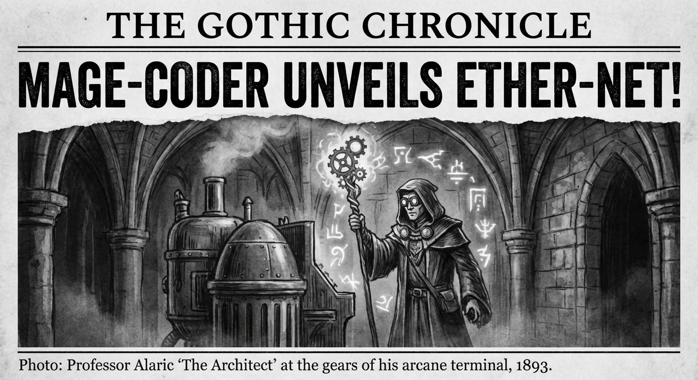

Morning Edition
6:00 AM CSTMarkets & Finance
Bitcoin Holds $70K Amid Extreme Fear
The crypto market is testing the $70,000 support level as the Fear & Greed index plunged to 12—Extreme Fear. Despite the sentiment, Solana and TRON showed resilience, bucking the broader downtrend in the digital asset space.
— Source: Blockchain MagazineS&P 500 Goes 24/7 on Hyperliquid
The first officially licensed perpetual for the S&P 500 has brought Wall Street on-chain. This milestone allows for 24/7 trading of the major index, merging traditional finance with the efficiency of decentralized platforms.
— Source: MEXC BlogSelective Momentum in PE
Private Equity firms are focusing on high-performing companies capable of leveraging deep operational expertise and AI integration to maintain margins in a high-interest environment.
— Source: Industry InsightsTech & AI
AI-Human Synergy: The New Benchmark
The gap between tech-first companies and laggards is widening. Firms that pair the best AI tools with top-performing developers are achieving unprecedented efficiency, while slow-movers face potential obsolescence.
— Source: Crypto IntegratedSaturday's Dev Wisdom
Today is for integration—bringing together the fragments of your week's work into a coherent whole. The Equinox resonance invites a balance between bold experimentation and stable architecture. Trust your gut when the code feels "off"; your intuition is just your brain recognizing patterns your conscious mind hasn't named yet.
— Source: Developer's Equinox Manifesto
The Equinox Architect: Saturday's Lunar Shift — Clarity through Code.
"Complexity is a beast, but you are the master of your domain. A commit today is a seed for the next decade. Don't fear the scale you've built—embrace it, refine it, and then release it. Your vision is wide, but your focus must be surgical. Make it count."— Saturday's Developer Equinox
Sagittarius Horoscope
As the lunar cycle shifts, your fiery Sagittarius energy meets a fresh seasonal shift. Expect a surge of intellectual clarity in your code—today, refactoring feels less like a chore and more like a rebirth. Your Year of the Rat resourcefulness is your secret weapon. Watch out for off-by-one errors in your ambitious new project; your vision is wide, but your focus must be surgical. Trust the process, Archer.
— Source: Adapted from Celestial Cycles, Mar 21, 2026World & US News
-
Global Market Volatility:
Investors are bracing for a year of volatility driven by U.S. midterm elections and diverging monetary policies among major central banks. Geopolitical risk remains the top concern for 2026.
-
Energy Tensions Peak:
Strikes on major natural gas facilities in the Middle East have disrupted global energy markets, leading to increased weapon spending and historical highs in conflict counts.
-
Kalshi Valuation Hits $22B:
Kalshi has raised over $1 billion at a valuation of $22 billion, marking a significant milestone in the prediction market landscape and institutional adoption of speculative assets.
-
"Is WWIII Here?":
Record weapons spending and intensifying decisive rhetoric from global powers have analysts debating the stability of the current world order as regional conflicts continue to displace thousands.
Active Reminders
- Build Oomi iOS and Android app
- Plaid Integration Research
- Connect Nemu to Notion
- Research VPN/proxy services
- Create security OpenClaw bot